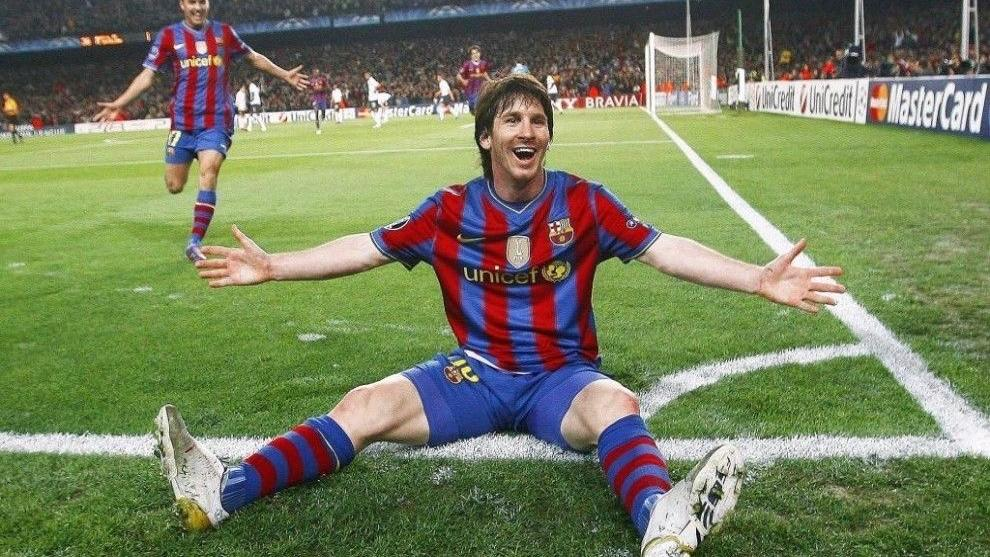
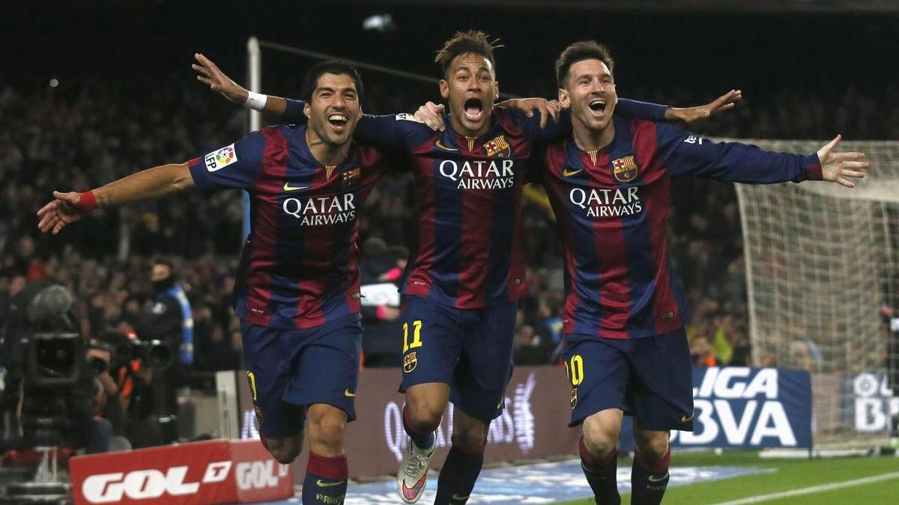
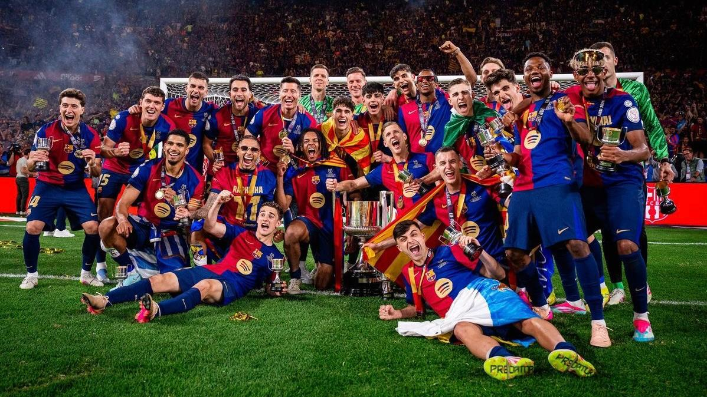

El FC Barcelona El FC Barcelona nació el 29 de noviembre de 1899, cuando Joan Gamper reunió a un grupo de jugadores suizos, ingleses y catalanes para fundar un club que rápidamente se convirtió en un símbolo del catalanismo y de la identidad local, adoptando el lema “Més que un club”. Durante sus primeros años, el equipo compitió en torneos regionales y logró su primer éxito en 1902 al ganar la Copa Macaya, consolidándose en los campeonatos de Cataluña y sentando las bases de su historia competitiva.
En las décadas siguientes, el Barça creció en importancia y popularidad. En 1922 inauguró el Camp de Les Corts, un estadio que le permitió recibir a más aficionados y proyectarse hacia nuevas metas. Durante los años de la Guerra Civil y la posguerra, el club sufrió dificultades políticas y económicas bajo el régimen franquista, pero sobrevivió gracias a la pasión de sus seguidores y la calidad de jugadores como László Kubala, quien ayudó a traer títulos nacionales e internacionales y a elevar el prestigio del club.
El año 1957 marcó un antes y un después con la inauguración del Camp Nou, un estadio enorme que se convertiría en el símbolo de la grandeza del club. Durante los años siguientes, el Barça cosechó éxitos europeos y nacionales y consolidó una filosofía de juego técnico y ofensivo, sentada por figuras como Johan Cruyff. En la década de 1990, bajo la dirección de Cruyff, surgió el “Dream Team”, que ganó cuatro Ligas consecutivas y la primera Liga de Campeones en 1992, mostrando un estilo de fútbol innovador basado en la posesión y la creatividad.
A principios del siglo XXI, el club consolidó su cantera, La Masia, de donde surgieron estrellas como Lionel Messi, Xavi Hernández y Andrés Iniesta, quienes marcaron una era dorada bajo la dirección de Pep Guardiola entre 2008 y 2012. Durante esos años, el Barça dominó Europa y España con su famoso tiki-taka, logrando 14 títulos en cuatro temporadas, incluyendo dos Champions League.
Después de 2012, el club atravesó un periodo de transición marcado por altibajos deportivos, cambios de entrenadores y problemas financieros, que culminaron con la salida de Messi en 2021. Sin embargo, el Barça continuó apostando por su identidad, combinando jóvenes talentos de La Masia con fichajes estratégicos, buscando recuperar la grandeza perdida. Para 2026, el club sigue siendo una de las instituciones más importantes del fútbol mundial, con una afición global que supera los 300 millones de seguidores y un legado que combina éxito deportivo con valores culturales y sociales, manteniendo vivo el espíritu de “Més que un club”.

el balon de oro...
Messi ganaba su segundo balon de oro, nadie sabria lo que se vendria...

el tridente...
Luis enrique logro hacer un tridente letal...

La nueva era...
Messi ya no esta, pero el 19 en un joven sigue estando ahi...